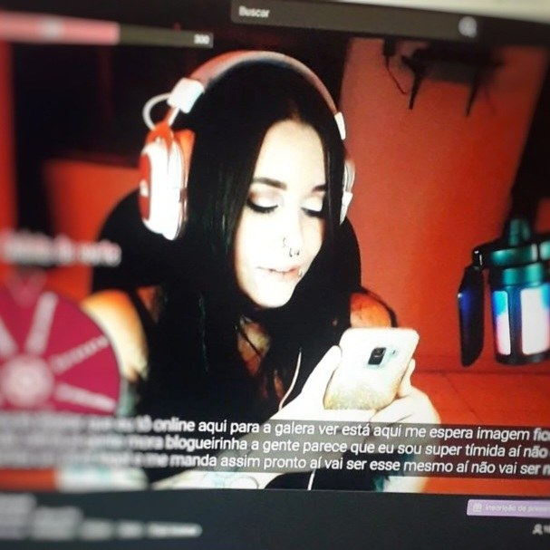
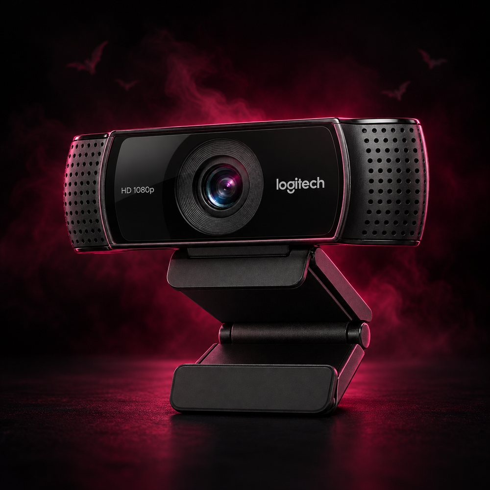

Contexto
Desenvolvimento do conceito visual e do overlay do canal Brumphomet na Twitch.
Brumphomet · UX/UI
A construção de uma comunidade através de transmissões ao vivo na Twitch - Canal "Brumphomet".
Conhecer o projeto

01 Visão geral
O desafio era criar a identidade visual e o overlay do canal sem orçamento inicial, de modo que refletissem minha personalidade, que une o delicado e o intenso.
Desenvolvimento do conceito visual e do overlay do canal Brumphomet na Twitch.

Rosa e preto para explorar o contraste entre o delicado e o intenso.
02 Identidade
Uma identidade visual inspirada no rock, no black metal e na minha personalidade.
Identidade visual do canal Brumphomet.
#111111#860025#E3004A#FFFFFFPreto, vinho, rosa e branco para o contraste entre o delicado e o intenso.


Fonte gratuita ArtDystopia II, inspirada em logos de black metal como o da banda Rotting Christ.
03 Soluções
Soluções simples e acessíveis para iniciar as transmissões, criar uma experiência única e aproximar a comunidade.

Celular como webcam e teclado numérico como controle provisório.

Cenas, camadas e filtros no Streamlabs para exercitar boas práticas.

Resgates com pontos do canal e legendas automáticas com Stream-CC.

Quadro do canal com pedidos musicais, videoclipes e vinhetas nas lives.
04 Resultados
O canal passou a gerar retorno financeiro, permitindo investir em equipamentos e melhorar a qualidade das transmissões.
Para doações por parte dos usuários, utilizo a plataforma LivePIX para não expor meus dados pessoais como destinatária de transferências via PIX. A plataforma gerencia as doações dos espectadores e exibe as mensagens na tela em tempo real. Já os pagamentos da Twitch são feitos em dólar, como acordado no contrato de Streamer Afiliado.

Compra de webcam, microfone e Stream Deck com o retorno das lives.
05 Aprendizados
A experiência me mostrou a importância de escutar a comunidade e de que cuidado e planejamento levam a bons resultados.
Pesquisei, assisti a tutoriais, conversei com outros streamers e consultei os espectadores.
Continuar ramificando minha presença em outras redes sociais e explorar o nicho de games, que está super em alta no Brasil, como eu esclareço a respeito na versão completa deste estudo.
Gostou do processo? Conheça minha trajetória completa.
Baixar currículo (PDF)